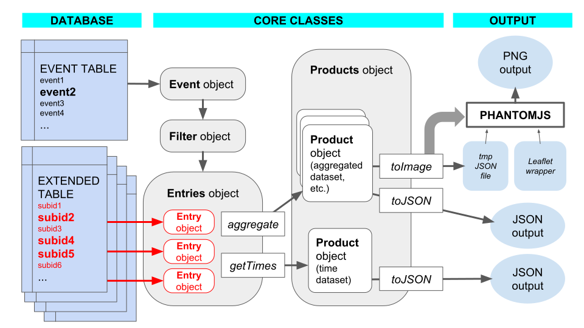

Technical Guide¶
Process flowchart¶
The following diagram shows the flowchart for the creation of DYFI products. Object classes and methods are explained in the Module List.
Warning
In the above diagrams, items shown in red contain or transfer personally identifiable information (PII). Care must be taken to make sure that data in these sections are properly handled.
Input streams¶
Earthquake events¶
DYFI maintains its own database table of earthquake events. An external mechanism is required to populate this database and trigger the DYFI process after an earthquake.
In the event table, each earthquake is described by a separate row. The event data is described below.
Column |
Description |
eventid |
USGS event ID, usually 10 characters; primary key |
mag |
Magnitude |
lat |
Epicentral latitude |
lon |
Epicentral longitude |
depth |
Hypocentral depth |
region |
obsolete |
source |
2 letter network code |
mainshock |
obsolete |
loc |
Text description of the location (e.g. “9km ENE of San Simeon, CA”) |
nresponses |
Number of DYFI responses attached to this event |
eventdatetime |
Earthquake event time in YYYY-MM-DD HH:MM:SS format |
createdtime |
Time that this row was last created or updated |
newresponses |
Number of DYFI responses for this event since the last time this was run |
run_flag |
obsolete |
citydb |
obsolete |
zipdb |
obsolete |
ciim_version |
Incremented whenever |
code_version |
Current version of DYFI when this event was last run |
process_timestamp |
Time when |
max_intensity |
Maximum computed intensity |
sent_email |
obsolete |
event_version |
Event information version (from ComCat) |
orig_id |
Original USGS event ID |
eventlocaltime |
Event local time (from ComCat) |
invisible |
see below |
good_id |
obsolete |
All columns are Sqlite text fields.
newresponses is updated by the backend whenever a new user response is processed, and is reset to zero whenever the
rundyfi.pyruns. This is how the backend knows whenrundyfi.pyshould be triggered.orig_id is initially the same as eventid. This allows the
first event ID to be archived in case the event ID is manually changed.
invisible is set to true when an event is no longer valid, and DYFI products are no longer applicable. Examples are bogus, duplicate, or non-authoritative events. These events will not be exported, and responses will not be automatically associated to them. (They may still be run manually.)
Note
Obsolete columns are for compatibility with DYFI3 only. They will be removed in a future release.
User responses¶
DYFI maintains its own database table of earthquake user responses. An external mechanism is required to populate this database and possibly trigger the DYFI process when a possible earthquake has occured.
For developers who wish to send DYFI compatible data without going through the USGS questionnaire, see the DYFI Questionnaire API.
For one possible method of triggering DYFI without an earthquake notification, see the BETA project DYFI Autolocator <https://github.com/vinceq-usgs/autolocator>.
Warning
User reponses have the possibility of containing PII (Personally Identifiable Information) data. In particular, the fields name, street, phone, email, and comments ask for PII data; but all user-filled fields have the potential of taking PII data. Make sure that this table, and data transfer mechanisms that access it, are secure.
In the response table (called ‘extended table’ for historic reasons), each user response is described by a separate row. The response data is described below.
Column |
Description |
subid |
(Integer) unique primary key for each row |
eventid |
Event ID that this response is associated to |
orig_id |
Original event ID when response was processed |
suspect |
Flag for responses that are bogus or outliers |
region |
obsolete |
usertime |
DYFI Felt Report, see below |
time_now |
Time this reply was submitted in YYYY-MM-DD HH:MM:SS format |
latitude |
User latitude |
longitude |
User longitude |
geo_source |
obsolete |
zip |
obsolete |
zip_4 |
obsolete |
city |
obsolete |
admin_region |
obsolete |
country |
obsolete |
street |
DYFI Felt Report, see below |
name |
DYFI Felt Report |
DYFI Felt Report |
|
phone |
DYFI Felt Report |
situation |
DYFI Felt Report |
building |
DYFI Felt Report |
asleep |
DYFI Felt Report |
felt |
DYFI Felt Report |
other_felt |
DYFI Felt Report |
motion |
DYFI Felt Report |
duration |
DYFI Felt Report |
reaction |
DYFI Felt Report |
response |
DYFI Felt Report |
stand |
DYFI Felt Report |
sway |
DYFI Felt Report |
creak |
DYFI Felt Report |
shelf |
DYFI Felt Report |
picture |
DYFI Felt Report |
furniture |
DYFI Felt Report |
heavy_appliance |
DYFI Felt Report |
walls |
DYFI Felt Report |
slide_1_foot |
DYFI Felt Report |
d_text |
DYFI Felt Report |
damage |
obsolete |
building_details |
DYFI Felt Report |
comments |
DYFI Felt Report |
user_cdi |
Computed from DYFI Felt Report |
city_latitude |
obsolete |
city_longitude |
obsolete |
city_population |
obsolete |
zip_latitude |
obsolete |
zip_longitude |
obsolete |
location |
obsolete |
tzoffset |
obsolete |
confidence |
Estimate of geocoding confidence, see below |
version |
obsolete |
citydb |
obsolete |
cityid |
obsolete |
All columns are Sqlite text fields unless indicated otherwise.
Columns marked DYFI Felt Report are populated from the online form.
orig_id is initially copied from eventid. For responses that were not originally attached to an event (“unassociated entries”), both fields would have the value “unknown”. When this entry is associated to an event or updated to a different ID, this field will show the original value.
suspect is set automatically by the
Entrymodule when the entry is suspected to be bogus or an outlier. The operator may also manually flag entries this way.time_now is set by the DYFI Felt Report submit function. This is the time used for associating entries.
usertime is filled in by the user. It is not automatically parsed; it is for the operator’s information only.
latitude and longitude are automatically filled in by the geocoding function of they DYFI Felt Report.
confidence is an estimate from the geocoding function of the precision of the latitude and longitude output. See Geocoding for details.
user_cdi is the value computed by the form the user’s intensity (only), with no aggregation. It is a quick way to look for outlier entries, but it is not used in DYFI computation.
Note
Obsolete columns are for compatibility with DYFI3 only. They will be removed in a future release.
DYFI products¶
The DYFI ‘signature product’ is no longer a static image but a GeoJSON file. This file contains the aggregated data as GeoJSON Features with coordinates for plotting and the corresponding intensities for each area (see the Product Guide).
The USGS Web Pages use the Leaflet rendering engine to display the maps, along with a suitable basemap. Users may use other rendering engines, such as OpenLayers, or a GIS application.
For the creation of static images, see the Implementation Guide.